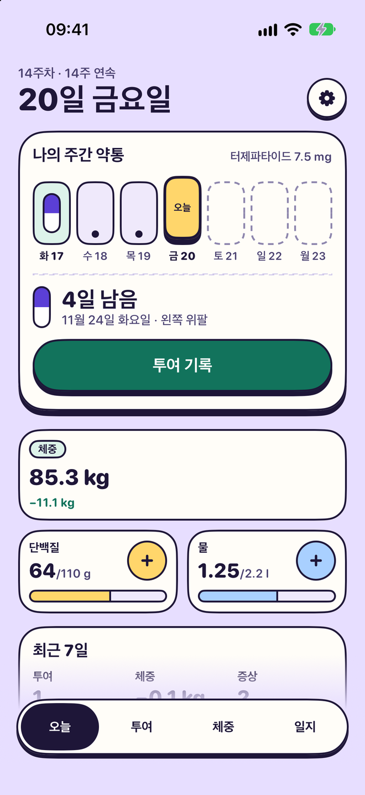

투여를 놓치지 마세요
일곱 칸으로 보는 한 주, 그리고 원하는 시간에 받는 알림.
 Levia
Levia
Levia는 내 치료를 위한 약통입니다. 투여일을 알려주고, 다음 주사 부위를 제안하고, 얼마나 왔는지 보여줍니다.

Levia는 독립적으로 만든 앱이며 어떤 제약회사와도 관련이 없습니다.
흩어진 메모는 줄이고, 투여일의 고민도 줄이세요.
일곱 칸으로 보는 한 주, 그리고 원하는 시간에 받는 알림.
Levia가 모든 부위를 기억하고 가장 오래 쉰 부위를 제안합니다.
체중, 속도, 목표까지의 마일스톤을 한눈에 보는 그래프.
수준은 기록한 용량과 약물의 공개된 반감기를 바탕으로 한 수학적 추정입니다. 혈액 측정값이 아닙니다.
월간 구독이나 일회성 구입도 가능합니다.
구독은 자동으로 갱신되며 iOS 설정에서 언제든지 해지할 수 있습니다. 결제 전에 App Store에서 해당 국가의 가격이 표시됩니다.
회원가입, 서버, 광고가 없습니다. Levia에 기록한 내용은 내 휴대폰에만 저장됩니다.